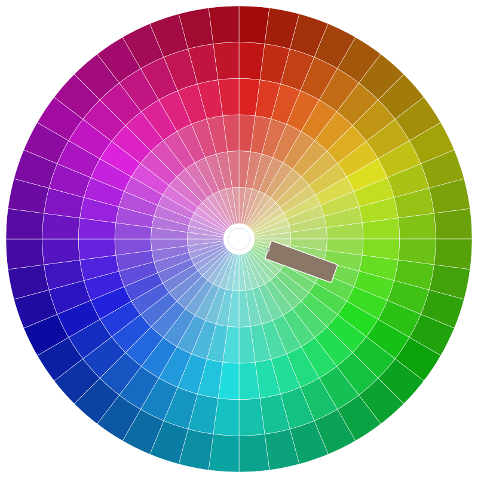

← → or Space
A tool in your toolbox — not a replacement for the human work that matters.
Melonie Poole · Chromatic Guide · PMI, July 2026
Part 1
Efficiency isn’t worth it if we lose connection, judgment, and meaning.
Used well, AI saves time on drafts, summaries, and prep. Used without limits, it can quietly replace the conversations, thinking, and ownership that hold teams together.
Your job as PM: decide what to delegate — and what must stay human.
Research on longevity and well-being points to social connection and meaning — and much of that meaning comes from work and workplace relationships.
“Many individuals could soon realize that human friendships at work are no longer necessary because AI is always agreeable, friendly, patient, and accessible.” Dr. Cornelia C. Walther, via Thomson Reuters Institute (Feb 2026)
Easy AI chat is not the same as navigating real colleagues — complexity, pushback, personality, trust. When PMs stop facilitating human conversation, programs drift.
New AI tools keep landing while workloads already feel heavier — a paradox of mandates and pressure.
“Unknowingly, we are sliding down the slippery slope of agency decay… people feel constantly overwhelmed.” Dr. Cornelia C. Walther
Pick a few tools. Use them deliberately. Don’t let the maze run you.
“Delegating tasks to AI… is gradually turning us into cognitive factory workers… we feel neither ownership, nor pride for the final creation.” Dr. Cornelia C. Walther
The answer isn’t rejecting AI — it’s pairing human literacy (judgment, relationships, ethics) with algorithmic literacy (knowing what to ask and how to verify).
Source: The human side of AI — Natalie Runyon, Thomson Reuters Institute (Feb 2026)
Part 2
From quick lookups to building things I actually use in program work.
Fast answers, definitions, “how do I say this?” — replacing search for everyday questions.
Risk logs, timelines, consolidated status — drafts I edit, not outputs I ship blindly.
Narrative decks, executive summaries, visuals — AI speeds the first pass; I own the message.
HTML presentations, simple web apps, portfolio views — built with AI-assisted coding tools, still designed and tested by me.
Part 3
What I reach for, and why.
Inside Word, Excel, PowerPoint, Teams, Outlook — meeting summaries, deck drafts, spreadsheet cleanup where my org already lives.
Long documents, brainstorming, prompt help, comparing options — whichever is approved and fits the task.
Building HTML sites, simple apps, and custom tools — Ask → Plan → Build, with me reviewing every change.
Fast narrative presentations when I need a visual story quickly, then I refine content and flow.
PM standards-aligned support when I want framing grounded in practice, not generic advice.
Use what your organization approves. This is my stack — not a shopping list.
Part 4
Examples of AI-assisted work that still required PM judgment.
A horizontal slide deck in the browser — same look as my site, no PowerPoint required for sharing. Built with AI-assisted coding; structure, story, and citations are mine.
You’re looking at it now. ← → to navigate.
A simple web checklist for new team members — links, tasks, and milestones in one place instead of scattered docs and email threads.
A custom portfolio dashboard — initiatives, milestones, and delivery status in one view when off-the-shelf tools didn’t match how we actually run programs.
Part 5
Take these with you — free, generic, no employer-specific content.
Questions? info@chromaticguide.com
